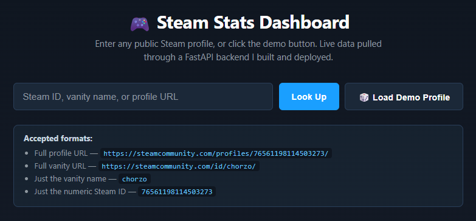
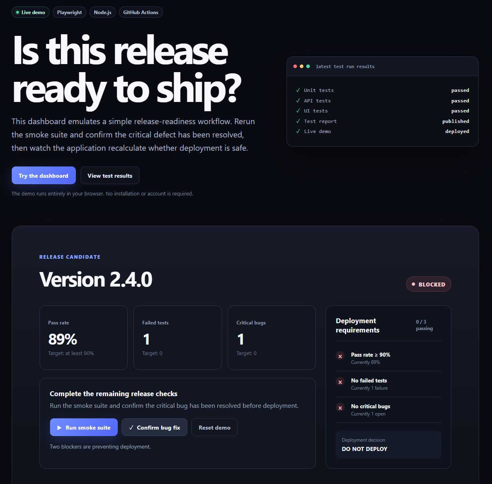

Software Engineering
Demos and skillset
Built on years of QA automation and systems work at Blizzard, these are personal projects that carry that same rigor into full-stack development.
Demos

Steam stats dashboard
A full-stack dashboard pulling live player data through the Steam Web API — FastAPI backend deployed on Render, static frontend on GitHub Pages, end to end and live.

Test automation suite
A QA automation portfolio built around real-world SDET practices: automated test scripting with Selenium and pytest, HTTP-level checks with requests, and continuous integration through GitHub Actions.